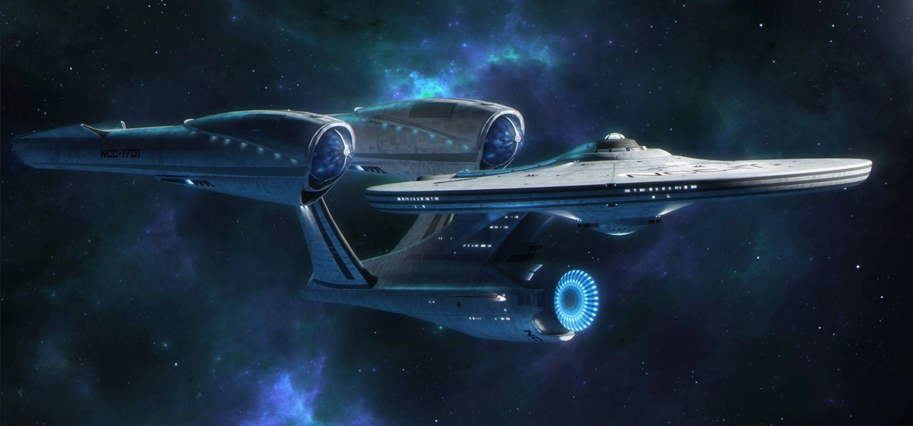
USS Enterprise NCC-1701
Constitution sınıfı • Federasyon bayrak gemisi (Kelvin Universe)
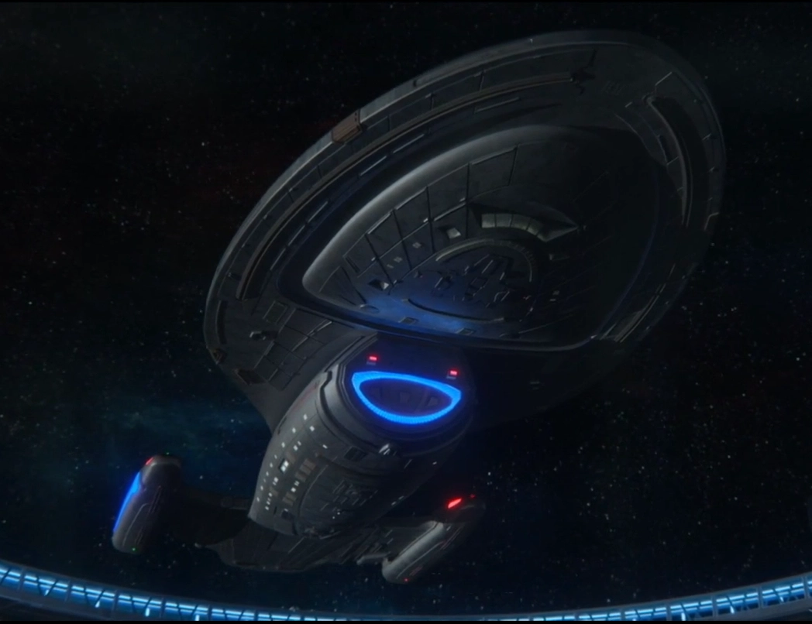
USS Voyager
Intrepid sınıfı • NCC-74656
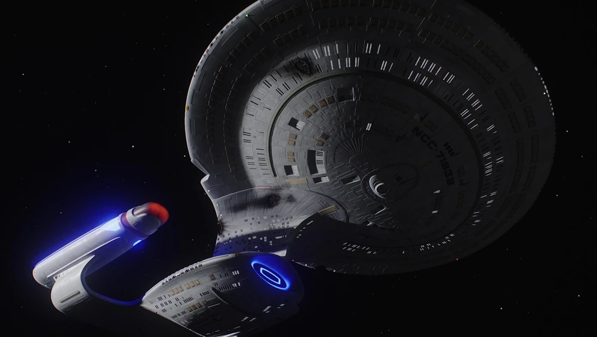
USS Odyssey
Galaxy sınıfı • NCC-71832
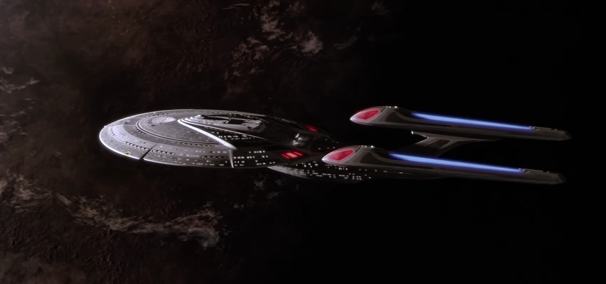
USS Enterprise NCC-1701-E
Sovereign sınıfı • Federasyon bayrak gemisi • 2379
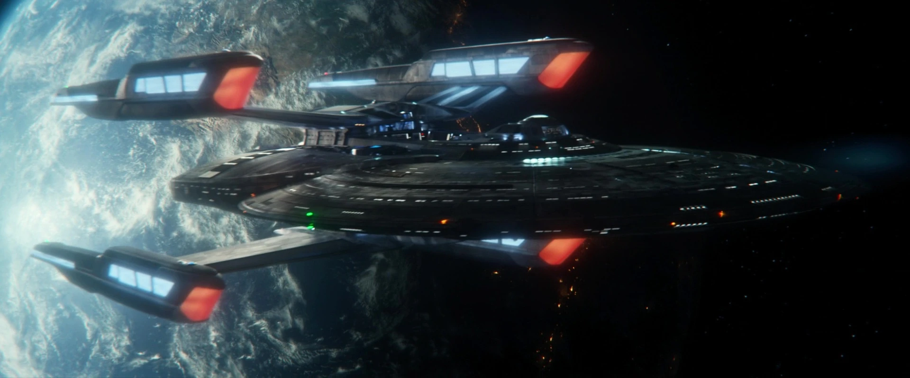
USS Stargazer
Sagan sınıfı • NCC-82893
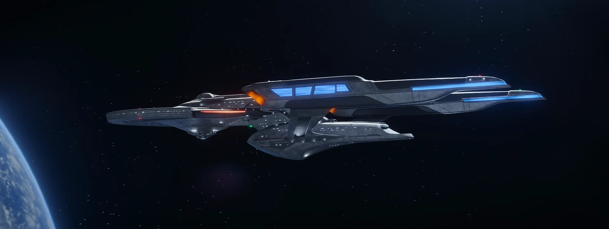
USS Titan
Luna sınıfı • NCC-80102
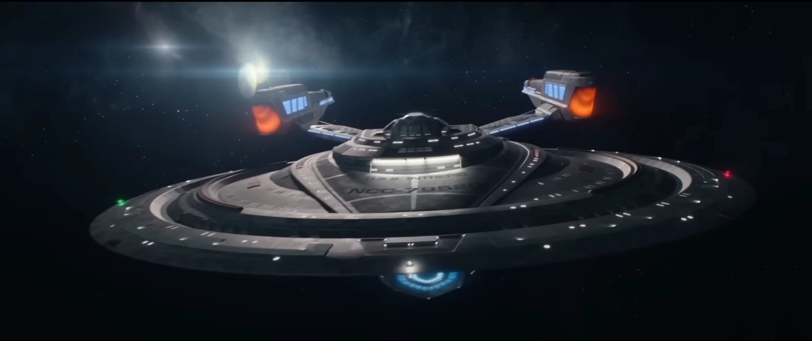
USS Intrepid
Duderstadt sınıfı • NCC-79520
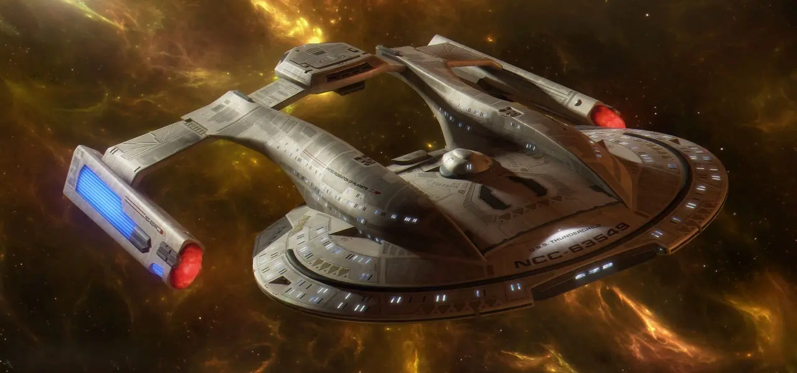
USS Thunderchild
Akira sınıfı • NCC-63549
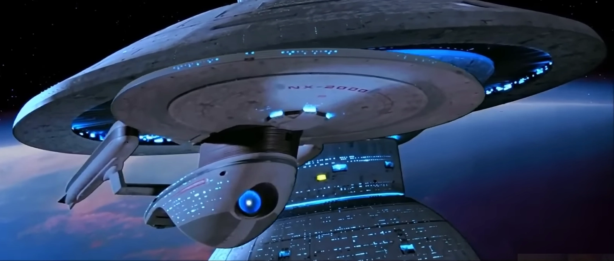
USS Excelsior
Excelsior sınıfı • NCC-2000
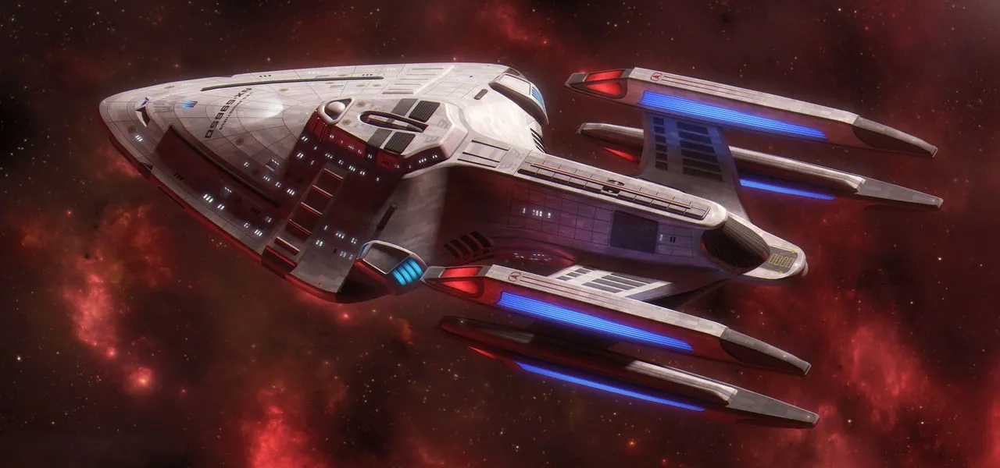
USS Prometheus
Prometheus sınıfı • NX-59650 • Taktik prototip
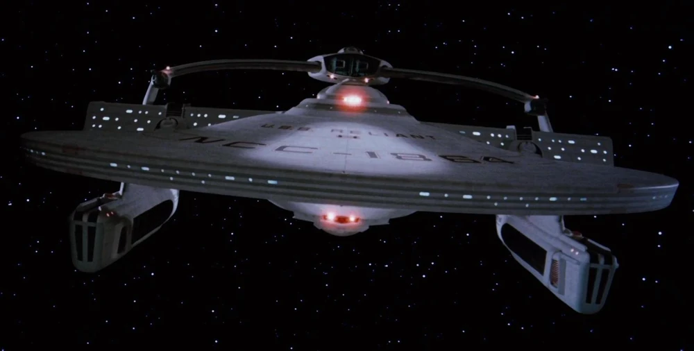
USS Reliant
Miranda sınıfı • NCC-1864
✕
USS Enterprise NCC-1701
Constitution sınıfı • Federasyon bayrak gemisi (Kelvin Universe)
Uzunluk: 725m
Maks. Hız: Warp 8+
Mürettebat: 1.100
Tür: Ağır Kruvazör
✕
USS Voyager
Intrepid sınıfı • NCC-74656
Uzunluk: 344m
Maks. Hız: Warp 9.975
Mürettebat: 141
Tür: Derin Uzay Keşif
✕
USS Odyssey
Galaxy sınıfı • NCC-71832
Uzunluk: 642m
Maks. Hız: Warp 9.6
Mürettebat: 1.012
Tür: Çok Amaçlı Ağır Kruvazör
✕
USS Enterprise NCC-1701-E
Sovereign sınıfı • Federasyon bayrak gemisi • 2379
Uzunluk: 685m
Maks. Hız: Warp 9.995
Mürettebat: 700
Tür: Filo Komuta Kruvazörü
✕
USS Stargazer
Sagan sınıfı • NCC-82893
Uzunluk: 540m
Maks. Hız: Warp 9.99
Mürettebat: 500
Tür: Uzay Kruvazörü
✕
USS Titan
Luna sınıfı • NCC-80102
Uzunluk: 454m
Maks. Hız: Warp 9.99
Mürettebat: 350
Tür: Derin Uzay Kaşifi
✕
USS Intrepid
Duderstadt sınıfı • NCC-79520
Uzunluk: 650m
Maks. Hız: Warp 9.99
Mürettebat: 500
Tür: Ağır Kruvazör
✕
USS Thunderchild
Akira sınıfı • NCC-63549
Uzunluk: 464m
Maks. Hız: Warp 9.8
Mürettebat: 500
Tür: Taktik Fırkateyn
✕
USS Excelsior
Excelsior sınıfı • NCC-2000
Uzunluk: 467m
Maks. Hız: Warp 9.6
Mürettebat: 750
Tür: Çok Amaçlı Kruvazör
✕
USS Prometheus
Prometheus sınıfı • NX-59650 • Taktik prototip
Uzunluk: 415m
Maks. Hız: Warp 9.99
Mürettebat: 175
Tür: Taktik / MVAM
✕
USS Reliant
Miranda sınıfı • NCC-1864
Uzunluk: 243m
Maks. Hız: Warp 9.2
Mürettebat: 220
Tür: Çok Amaçlı Hafif Kruvazör